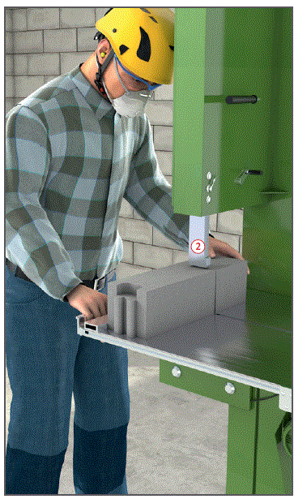
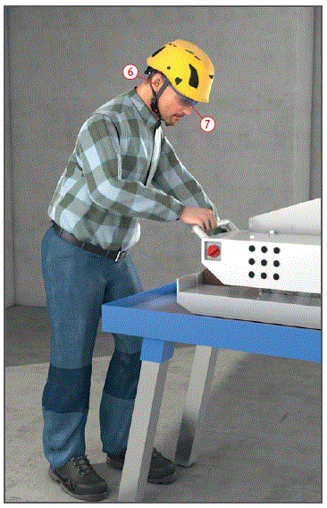
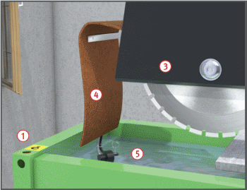

Gefährdungen
- Es kann zu Schnittverletzungen und einer Schädigung des Gehörs kommen.
- Quarzhaltige Stäube können Gesundheitsschäden verursachen.
Schutzmaßnahmen
- Generell zur Trockenbearbeitung nur staubarme Systeme (mit Absaugung) oder Steinsägen mit Nassbearbeitung verwenden.
- Beim Transportieren der Sägen mittels Kran vorgesehene Anschlagösen
 verwenden.
verwenden.
- Sägen standsicher und waagerecht aufstellen.
- Nur über einen besonderen Speisepunkt mit Schutzmaßnahme anschließen, z. B. Baustromverteiler mit FI-Schutzeinrichtung.
- Nur vom Hersteller vorgesehene Sägebänder/Sägeblätter verwenden.
- Rissige Sägebänder bzw. -blätter aussondern.
- Möglichst lärmarme Sägeblätter verwenden.
- Drehrichtungspfeil auf dem Sägeblatt beachten.
- Durchführung von Unterweisung und Einweisung des Bedieners anhand der Betriebsanleitung des Herstellers.
Zusätzliche Hinweise für Mauerstein-Bandsägen
- Bandsäge mit Absaugung verwenden.
- Maschine nur zum Sägen von Porenbeton einsetzen.
- Höhenverstellbaren Sägebandschutz
 abhängig von der jeweiligen Steinhöhe verwenden.
abhängig von der jeweiligen Steinhöhe verwenden.
- Sägebandradkasten während des Betriebes geschlossen halten.
- Mauersteine nicht verkanten – Rissgefahr des Sägebandes. Anschlaglineal benutzen.
- Bei der Bearbeitung kurzer und schmaler Steine Zuführholz benutzen.


Zusätzliche Hinweise für Diamant-Trennsägen
- Diamant-Trennsägen nur zum Sägen von Steinen verwenden.
- Auf ordnungsgemäß angebrachte Schutzeinrichtungen achten:
- Sägeblatt-Schutzhaube
 ,
,
- Spritzschutz/Aerosolbindung
 .
.
- Wasserzufuhr sicherstellen
 , keine Trockenschnitte ausführen.
, keine Trockenschnitte ausführen.
- Umlaufwasser regelmäßig reinigen/wechseln, bei Maschinen ohne Aufbereitung mind. täglich.
- Gehörschutz
 und Schutzbrille
und Schutzbrille  benutzen.
benutzen.
Prüfungen
- Art, Umfang und Fristen erforderlicher Prüfungen festlegen (Gefährdungsbeurteilung) und einhalten, z. B.:
- vor jeder Arbeitsschicht auf augenscheinliche Mängel,
- nach Bedarf, mind. 1 x jährlich durch eine "zur Prüfung befähigte Person" (z. B. Sachkundiger).
- Ergebnisse der regelmäßigen Prüfungen dokumentieren.
Arbeitsmedizinische Vorsorge
- Arbeitsmedizinische Vorsorge nach Ergebnis der Gefährdungsbeurteilung veranlassen (Pflichtvorsorge) oder anbieten (Angebotsvorsorge). Hierzu Beratung durch den Betriebsarzt.
07/2021